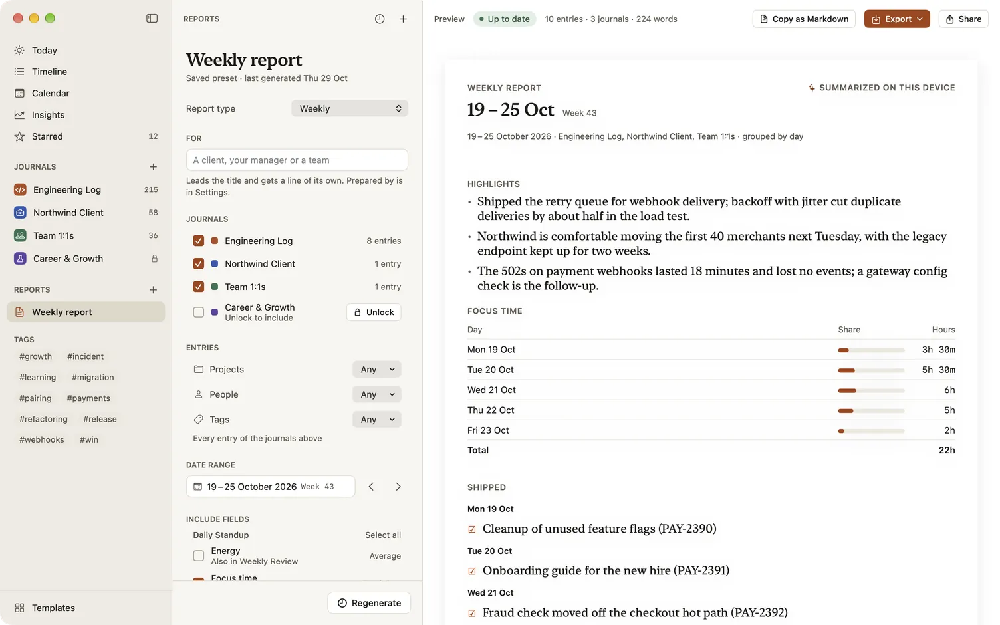
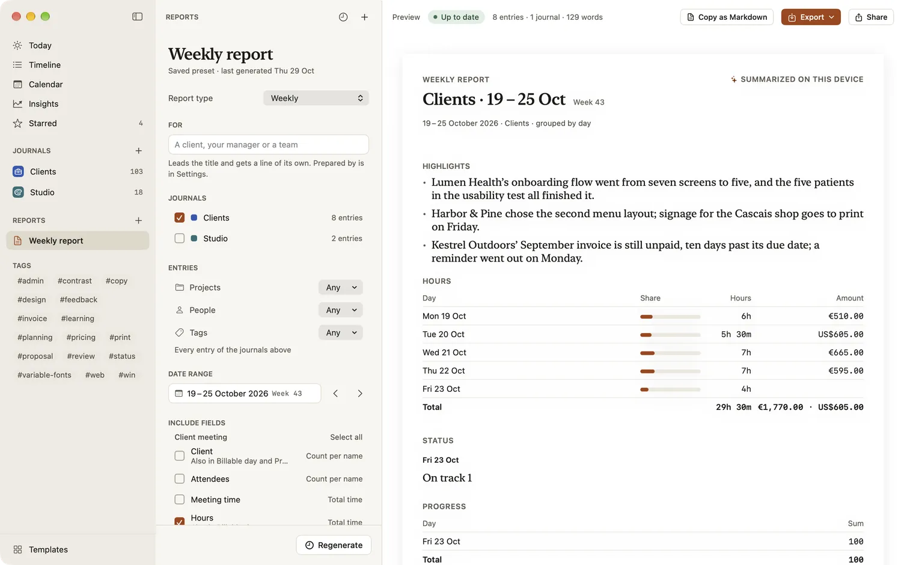
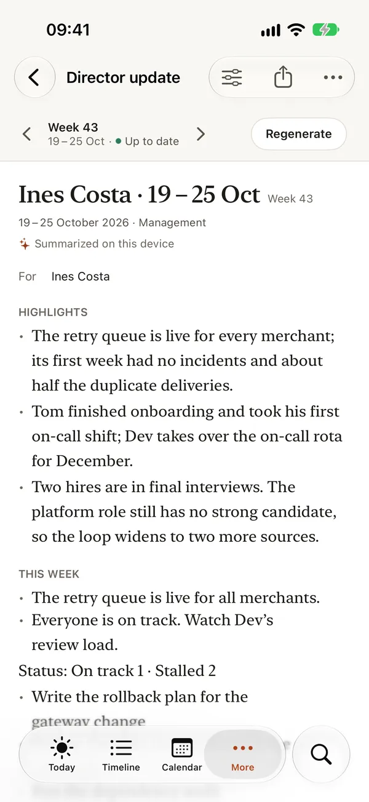

Reports: weekly, director update and self-review
A report turns a week, a month or a review period of entries into a summary you can read, edit and send. Because entries are structured, Dayfolio doesn’t just paste your notes together: it lists what shipped, adds up hours in a time table, counts statuses and puts your starred entries first. Making and reading reports is free.
Open Reports
- On a Mac: Reports are in the sidebar under Journals. Choose + beside Reports for the New report menu.
- On iPhone: More › Reports. On iPad: Reports in the sidebar, or More › Reports in a narrow window.
- From elsewhere: Create report in Insights, Make a report on a person’s, project’s or tag’s page, and Make this week’s report from Siri or Shortcuts.
Kinds of report
| Kind | What it covers |
|---|---|
| Weekly | What you worked on, week by week. Starts on the last full week, or this week from Friday on. |
| Monthly | A calendar month, summarized. |
| Performance review | The last six months, with highlights: a brag document, grouped by project, what shipped first and starred entries leading. |
| Director update | This week, what shipped, risks and next week, as four short sections. |
| Custom | Any dates, journals and fields. |
| Year-end self-review | This year so far, with your wins first: a performance review from 1 January to today. |
Make a report
- Choose + and a kind. A draft opens.
- Tick the journals to include.
- Under Include fields, tick the fields to report on. Each says what it adds: a total time, an average, a sum, a count per option, or a list.
- Optionally narrow the entries and choose how to group them (below).
- Choose Generate.
The report appears as a page you can read: one section per field, with text as bullets, ticked checklist items as done and unticked ones marked Open, durations in a time table with a total, ratings as averages and statuses as counts. Use ‹ and › to move between periods. History lists the reports made from it, by period.
Notes about people, the fields of 1:1 notes, Skip-level notes and Feedback given, start unticked in every kind but Custom, so they stay out of a report unless you tick them. A report filtered to one person ticks them for you.

Keep it with Save preset
A draft becomes a saved report with Save preset: its kind, journals, fields and filters are kept, and it appears in the sidebar (or the Reports list on iPhone and iPad). Next week, open it and choose Generate for the new period.
A report is frozen when it’s generated, so what you sent stays what you sent, including any highlights you edited. When entries change afterwards, its badge changes from Up to date to Entries changed since generated, and Regenerate makes it again.
Highlights
- Highlights: starred entries puts the titles of your starred entries first, each linking back to its entry. Star entries as you go and your report writes its own highlights.
- Summarize on this device adds three to five bullets written by Apple Intelligence on your device, where it’s available. Nothing is sent anywhere.
Highlights are editable on the report, before you send it.
Filter the entries
Under the journals, Projects, People and Tags each read Any until you choose names. A report can then cover only entries for a project, with certain people or with a tag, such as “Only entries for Acme with Maya”. A person counts when they’re in a person field or @-mentioned in the text.
Group by sets the sub-headings: by date, by project, or by person.
The quickest way to a report about one person or project is from its page: tap the name in an entry, choose Entries with … (Entries for … for a project) and then Make a report. For a person, that’s a performance review of the last six months, titled with their name. See People and projects.
Who it’s for
- For, in the report’s settings, names who the report is for, and leads its title: “Acme · 5–11 Oct · Week 41”.
- Prepared by, in Settings › General › Reports, adds your name or business under the title of every report you make. Leave it empty for no line.
Billable time
For anyone who bills by the hour, a report can split its time and price it.
- Give each client project an hourly rate: on the project’s page or in Settings › People & projects, choose Hourly rate…, then an amount and a currency.
- In the report’s settings, set Split time by to a select field such as Category. Every time table is followed by its split: “Billable 6h 30m · Non-billable 2h · Internal 1h”.
- Under Billable, choose which options bill. The time table gains a Billable column, and an Amount column for projects with a rate.
Amounts are totalled per currency, such as “$450.00 · €180.00”, and never converted. The Billable day and Client meeting templates log hours with the same Category field, so they add up in one table.
A report with a time table can also be exported as a CSV file for your invoicing or a spreadsheet: one row per entry and project, with the date, journal, project, hours, rate, currency and amount.

Send it
To send a report:
- Copy as Markdown for a chat message or a document,
- Export as PDF, Word or Markdown, or as CSV when it has a time table,
- Share… sends the PDF, and Print… prints it.
The PDF and Word files are named after the report, so a review season’s files are easy to tell apart.

Your week, ready to review
If a journal has a weekly review template with a reminder, Today shows a card once that reminder has gone off and the week’s review isn’t written yet: “Your week, ready to review”, with how many entries you wrote, items done and entries starred. Start this week’s review opens the review entry, and ⋯ › Make this week’s report makes the report. In a weekly review entry, the This week tray lists what you ticked off, what you starred and what’s still open, ready to add with a tap.
Locked journals in reports
A report that includes a locked journal asks you to unlock first, and a report made from one opens only while it’s unlocked. When you’d rather leave it out, choose Generate without that journal. See Locked journals and privacy.
What’s free
Making a draft, generating it and reading it in the app are free, over all your entries. Saving a report preset, keeping its reports, and sending them by copy, export, share or print come with the full version.